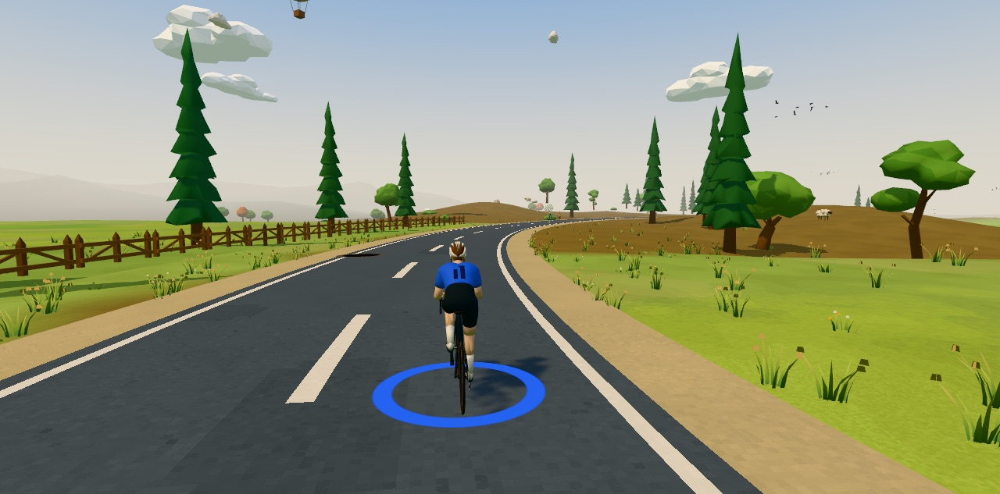
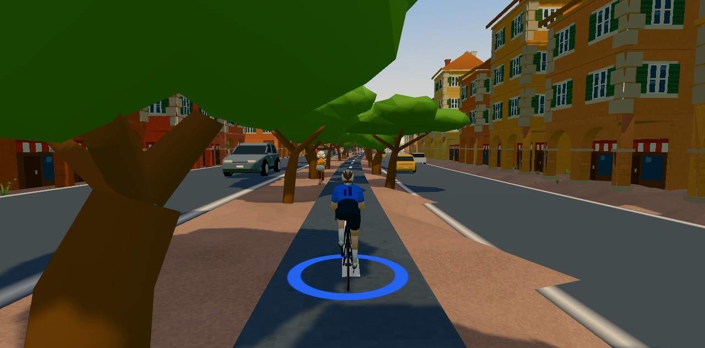
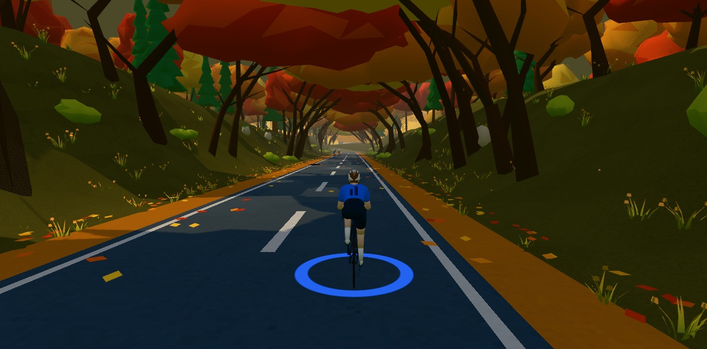
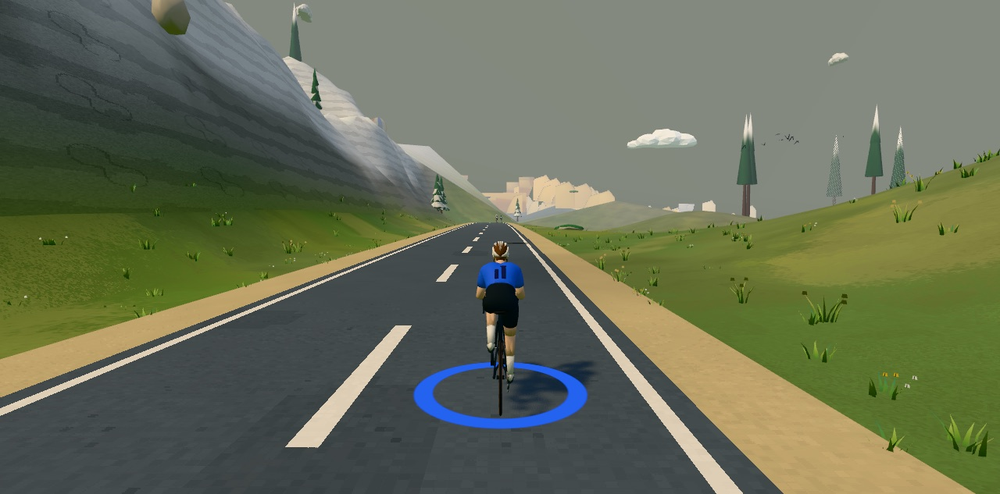
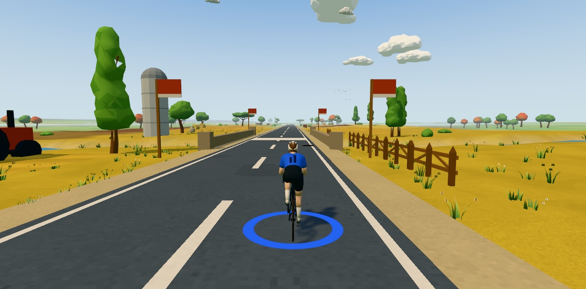
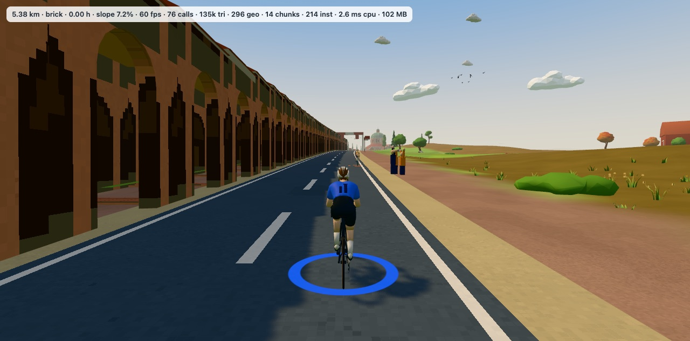
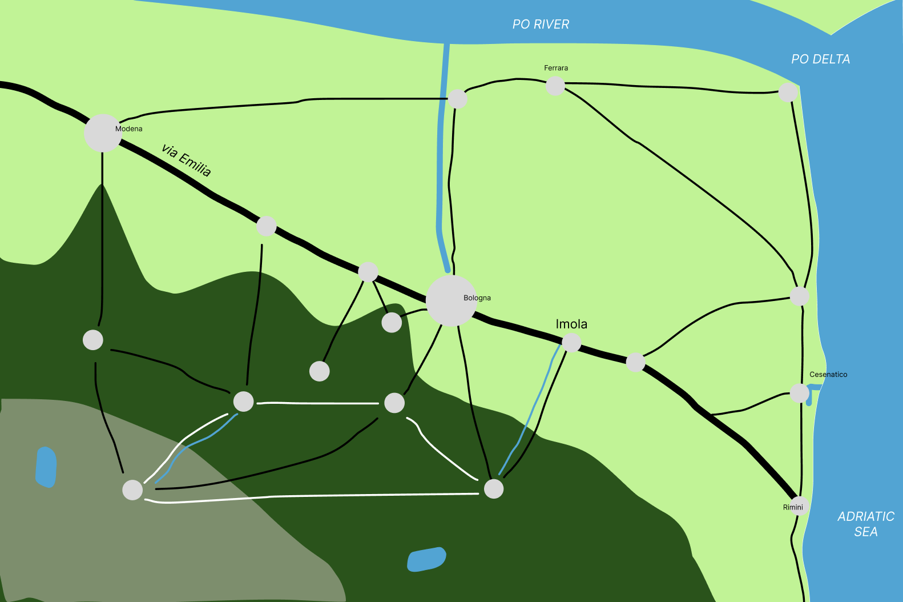

A road-cycling world that runs in the browser beside a smart trainer. The road is a graph built offline from a hand-made source. Scenery is generated per chunk from a seed. Big trees switch to cheaper models and then to impostors. Other riders and events run in one simulation.
Road figures come from routes/map.json, read directly. Limits come from the code. Triangle and frame figures come from the project docs.
The chase camera sits behind the rider. Trees, houses and fields are placed by the world from a seed, not stored in a file. The blue ring marks the rider's place on the road.






The world builds one frame object and runs a fixed list of systems in order. Each system writes only its own objects. The order below is the order in the code (world/index.ts).
Schematic. Widths are not to scale.
Steps 1 to 4 run one by one. Step 5 runs the systems array in order. Step 6 draws the frame. stop() disposes the systems in reverse order.
| # | System | File | What it does |
|---|---|---|---|
| 1 | sim | agents/agents.ts | Steps the agent simulation: player lane, riders, cars, tram, running event. |
| 2 | player | view/player3d.ts | Places and animates the rider and the ghost. |
| 3 | chase | view/chase.ts | Moves the chase and top-view cameras. |
| 4 | atmosphere | terrain/atmosphere.ts | Lights, fog, region colours, mist, sun direction. |
| 5a | chunkView | scenery/chunkView.ts | Streams the 200 m chunks around the rider. Sets chunksChanged. |
| 5b | traffic | view/traffic3d.ts | Draws the other riders and their crowd poses. |
| 5c | city | view/city3d.ts | Draws city cars and pedestrians. |
| 5d | cityMass | scenery/cityMassView.ts | Draws the Bologna building masses. |
| 5e | porto | scenery/portoView.ts | Draws the Porto set piece. |
| 5f | tram | view/tram3d.ts | Draws the Bologna tram. |
| 5g | townSigns | scenery/townSign.ts | Draws the town name signs. |
| 5h | gates | view/gates.ts | Draws gates and finish arches on the route. |
| 5i | terrain | terrain/terrain.ts | Draws the near and far ground meshes. |
| 5j | props | scenery/props.ts | Builds instanced prop batches, LOD, impostors and blob shadows. |
| 5k | groundCover | scenery/groundCover.ts | Draws grass tufts and ground cover. |
| 5l | sky | terrain/sky.ts | Sky, clouds, birds, sun. |
| 5m | sand | terrain/sand.ts | Sand and dune ground in the desert biome. |
| 6 | render | renderer.ts | Renders the scene through the post-processing chain. |
Known issue: SYSTEM_NAMES in index.ts has no entry for townSigns. From that point the timing labels shift by one, and sand shows as 12. Add "townSigns" at index 6 to fix it.
The app never builds the road at run time. A hand-made source holds nodes and edges. A build step writes a fixed file, and the app reads it.

All 52 edges, grouped by their biome tag. Lengths are summed from the 2 m samples in map.json.
The rider starts on Via Indipendenza in Bologna and follows 8 edges back to the start. Each block is one edge, sized by its length. Total: 28.8 km.
Each edge's steepest 2 m step, in percent. The build caps the grade at 8 %. The highest edge is 7.8 %. Most edges are flat.
52 edges. Most of them are flat (0 to 1 %). Seven reach 7 to 8 %, the build cap.
Each sector has a scenery template. Templates decide the prop mix, the ground and the buildings. The bar shows how many edges each sector holds.
The sector names in brackets are the sector ids in map.json. The city, Porto, and San Luca sectors have their own scenery set pieces.
Ground height depends only on position. Scenery is made per 200 m chunk from a fixed seed. The same chunk gives the same trees and houses on any route.
Chunk levels around the camera focus. A chunk leaves a level 8 % past its entry distance, so it does not flicker at the edge.
| Setting | Value | What it does |
|---|---|---|
| NEAR | 350 m | Ground meshes and all props. |
| MID | 750 m | Far-reach trees and set pieces only. |
| DROP | 900 m | Chunks beyond this are dropped from the scene. |
| Hysteresis | × 1.08 | A chunk leaves a level 8 % past its entry point. |
| First frame | 260 m | Every chunk this close is built at once. Then one per frame. |
| Cache | 64 chunks | Built chunk data kept for reuse. |
| Geometry pool | cap 6 | Uploaded buffers are reused when a new chunk fits. |
| Far terrain ring | 30 m step, 720 m half-size | A 60 m hole is left for the near ground. |
The shadow pass draws only near casters. Small props such as rocks, bushes and fences cast no shadow. Blob shadows are a soft dark patch under nearby props, a cheap stand-in for a real shadow.
Big trees switch to cheaper models with distance. The switch dissolves, so no tree changes shape in one frame. Far trees become camera-facing quads.
Chase view. Yellow marks the dissolve bands. Autumn trees: far model from 40 m (band 33 to 47 m), impostor from 100 m (band 90 to 110 m). Giant firs: far model from 40 m, impostor from 150 m (band 140 to 160 m). All distances are from the camera focus.
| Object | Switch | Band | Measured from | View |
|---|---|---|---|---|
| Giant fir (chase) | 40 m | ±7 m | camera focus | chase |
| Giant fir (iso) | 95 m | ±7 m | camera focus | iso |
| Giant fir impostor | 150 m | ±10 m | camera focus | chase only |
| Autumn tree (far) | 40 m | ±7 m | camera focus | chase |
| Autumn tree impostor | 100 m | ±10 m | camera focus | chase only |
Autumn tree _dist model | 100 m | not checked | camera focus | not checked |
Cell layout from the code (impostor.ts). Colours are only for this drawing.
The renderer caps the pixels it draws at 3.7 M. A 4K screen has 8.3 M pixels, so it draws at about 0.67 of its pixel ratio along each side. The 2.5 M line switches multisampling from 4× to 2×.
The scale is the square root of the budget over the screen's pixels. A 4K screen gets √(3.7 / 8.29) ≈ 0.67. The ratio is also capped at 1.5, so a Retina laptop does not render at 2×.
The target is 250 000 triangles per frame at 60 fps. These figures come from the docs. They were not measured for this page. Measure with world.html?hud=1 before you use them.
Every model comes from code. Two generators write the files. Each model has a code-built fallback, so the world still renders if a file fails to load.
Size on disk in KB, twelve largest of the GLB files in app/public/models.
The shipped set is about 3.8 MB in total. Budgets and check rules are in .claude/rules/world-assets.md. tools/asset.sh runs build, check and preview for one model.
| Shipped file | Made by |
|---|---|
scenery/trees.glb | Blender: pines, firs, round and oak trees |
scenery/autumn.glb | Blender: autumn arches and maples, each with _far and _dist levels |
scenery/rocks_bushes.glb | Blender: rocks and bushes |
scenery/grass.glb | Blender: grass tufts |
rider/*.glb | Polystory source, then optimize_riders.py |
scenery/city.glb and friends | Polystory source, then optimize_city.py |
scenery/cactus.glb, farmhouse, tram | Polystory recipes only |
One simulation steps every moving thing near the rider once per frame. Each agent books its road space first, so no two agents share it. The order is fixed: player, tram, event, riders, cars.
Schematic cross-section. Positions are illustrative.
Spawners are pure. traffic.ts, cityTraffic.ts, tram.ts and pedestrians.ts decide where agents enter and how fast they go, from seeded hashes. Renderers in world/view/ draw state only.
Every 15 seconds a slot may start one event, at a random time after its first 2 seconds. An event never overlaps another. Each event goes through four phases: approach, act, recover, leave.
Illustrative timeline. The durations shown are not from the code.
A slot picks a kind by weight, among the kinds whose when() rule holds. The chart shows the share if every kind is allowed. Car pass has weight 6, overtake 3, honk 2, and each of the other 13 kinds has 0.3. The total is 14.9.
You can force one event with world.html?event=<kind>.
Three.js is a renderer. It draws triangles and gives you the GPU objects. It has no physics, no audio and no scene editor. A game engine ships all of those. We chose the renderer because the hard parts of this world are ours anyway, and an engine would only add parts we do not use.
| Option | What it is | Built-in physics | Visual editor | Control of road shader and chunks | Cost for this code |
|---|---|---|---|---|---|
| Three.js (ours) | renderer library | no | no | full: we write the shaders and the streaming | none, this is the current code |
| Babylon.js | full web engine | yes | yes: inspector, node material editor | good, but its own API | rewrite of app/src/world |
| PlayCanvas | web engine with a cloud editor | yes | yes, in the browser | good, inside its pipeline | rewrite, and a lock-in to its editor and format |
| Unity, Unreal, Godot | game engines with desktop editors | yes | yes | limited by the engine's web export | rewrite, a large web build, and weaker control of the web parts |
road/ and agents/ are unit-tested without three.js.Reconsider only if the project needs heavy physics, multiplayer rules beyond the relay, or a scene editor for non-programmers. Until then, a switch costs a rewrite of the world code and gives little back.
Source: the earlier chat "3D performance guidelines and game engines" (16 November 2026). The engine claims there were not checked against the engines' own documents. Treat the table as a starting point, and check current versions before a decision.
This page follows the code and map.json. The architecture doc is older, so it no longer matches these figures:
map.json is 28.8 km.